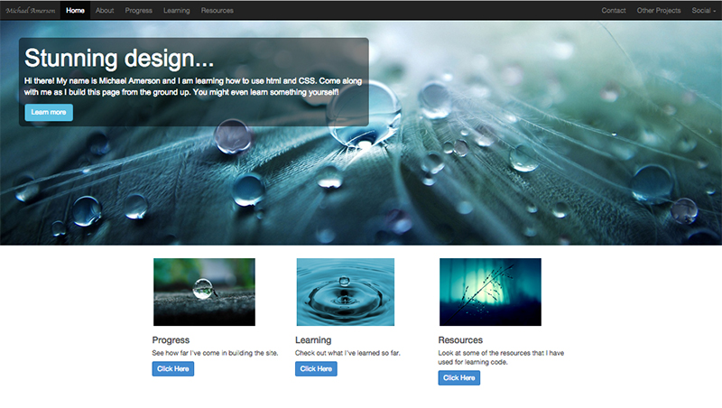
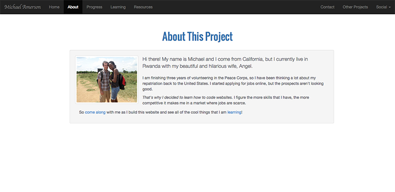

Site Progress
Home Page Week One
Every good website must begin with a good home page.
That's why I built my home page first. Now, I'll admit that I am committing the design sin of making things up as I go along. A real designer has a vision in mind from the start and takes calculated steps to build a website that is both visually appealing and functional.
But for me, this is a learning experience. I'm figuring things out as I go along, so I'm creating things as I go along.
Even so, since I created my home page first, I have a theme to follow for the rest of the pages on my site. I went with a simple layout, keeping to monochromatic blue and grey colors because they are the simplest to work with. When looking for photos, I really liked the ones of water drops, so I decided to make that a theme.
And once my home page was built, I was able to simply copy/paste the code for the navigation bar and the footer. My CSS page does the rest of the work to maintain the style throughout the site.
About Page Week Two
I finished this page quickly because it is very simple.
The page doesn't have much on it, so I put the content within a well. It was interesting figuring out how Bootstrap's rows and columns work and how they affect the thumbnail and paragraph being within the same well. Rows within rows is the way to go!